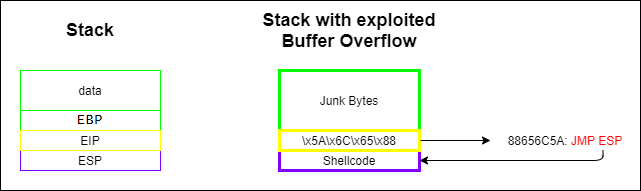

Example 2 (outdated): Buffer Overflow service server
Common C++ programming bug
• The size of the received data from the user is not checked causing a buffer overflow possibility
◇ The vulnerable instruction is strcpy. If the variable myinput contains more than 20 characters, a buffer overflow occurs

• If we send too many characters, the service crashes and does not respond with the echo
require 'socket'
s=TCPSocket.new([IP_address],[PORT])
s.gets
s.puts "A"*100
s.gets
s=TCPSocket.new([IP_address],[PORT])
s.gets
s.puts "A"*100
s.gets
server crashed
Summary of how a Buffer Overflow works
Buffer Overflow is been treated in System Security → Buffer Overflow
• To exploit a Buffer Overflow we have to
1) overwrite the data (local vars + EBP) with junk Bytes
2) overwrite the EIP with an address that contain JMP ESP
3) then insert our Shellcode in the position of ESP
• The payload is costituited of 3 parts
1) Junk Bytes: offset that we need for the payload before overwrite EIP, found before
2) EIP overwrite: we have to overwrite EIP register (used by the RET instruction) with an address that contain a command JMP ESP (or CALL ESP).
The command JMP ESP will be executed and the program will jump to ESP.
3) Shellcode: ESP register that now contain our Shellcode

Buffer Overflow of a Service Server
The size of the Buffer Space (buff_ov_variable) is 20 bytes; therefore if we put in more than 20 bytes, we have a buffer overflow and we can overwrite the Return Address
The most common technique to properly overwrite the Return Address is by using a CALL ESP instruction address (usually located in Kernel32.dll) and then put the shellcode after the local variables space.
• This how the stack looks like when the function input_copy is called.
• This is how it looks after, to correctly exploit the vulnerability, we have to detect where to insert the CALL ESP address and the malicious Shellcode.
Fuzzing
Fuzzing is an incremental technique to detect the correct position of the return address and it is mainly used when we cannot debug the vulnerable service
A fuzzer generally sends attack vectors to an application in an incremental way to discover how the stack looks
If we have the service executable, you can use tools like Immunity Debugger, IDA Pro or Ollydbg to debug and detect the stack return address position on your own